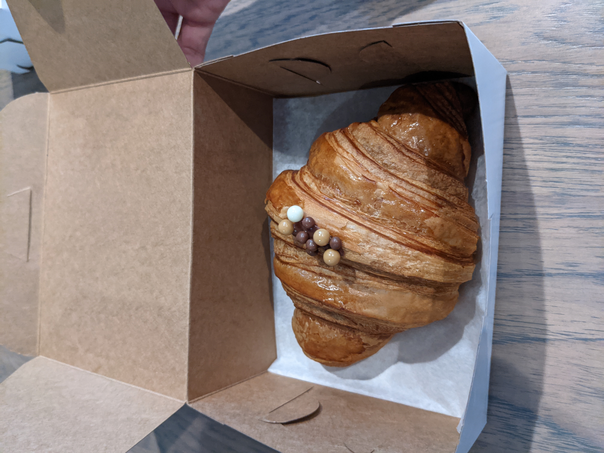
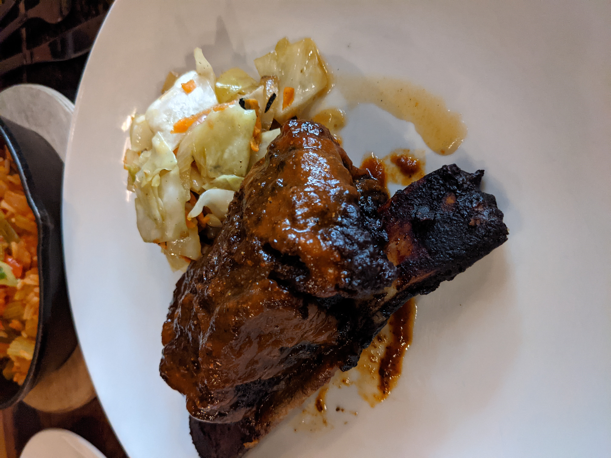
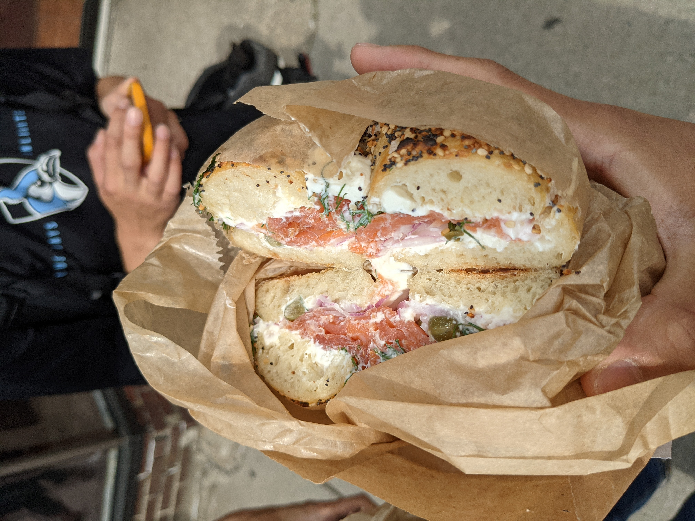
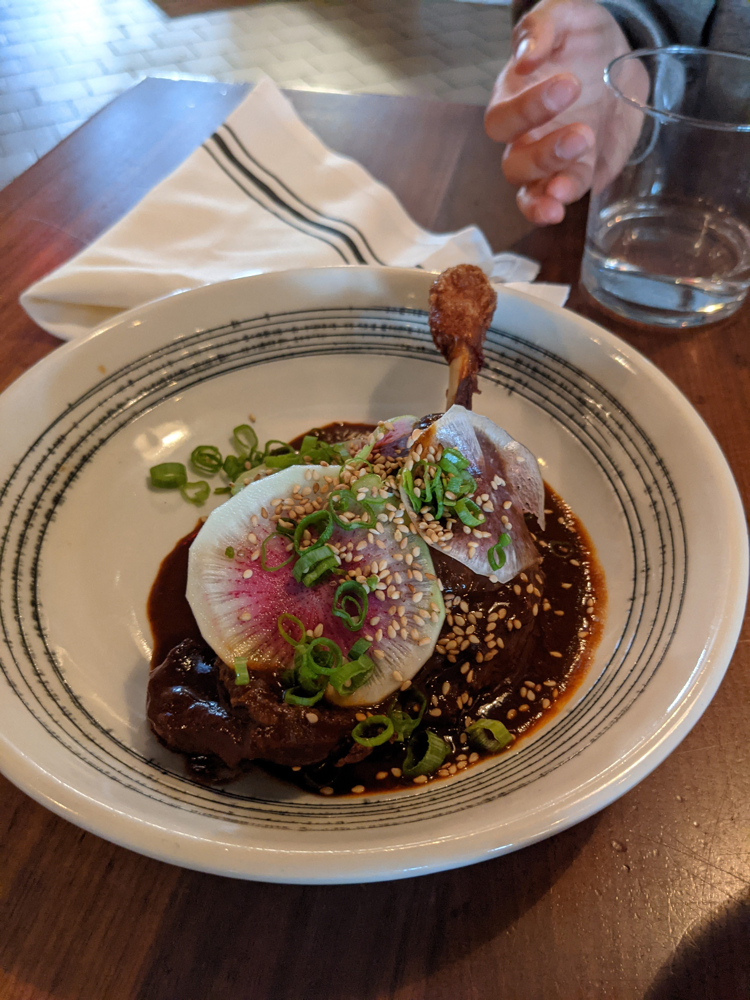
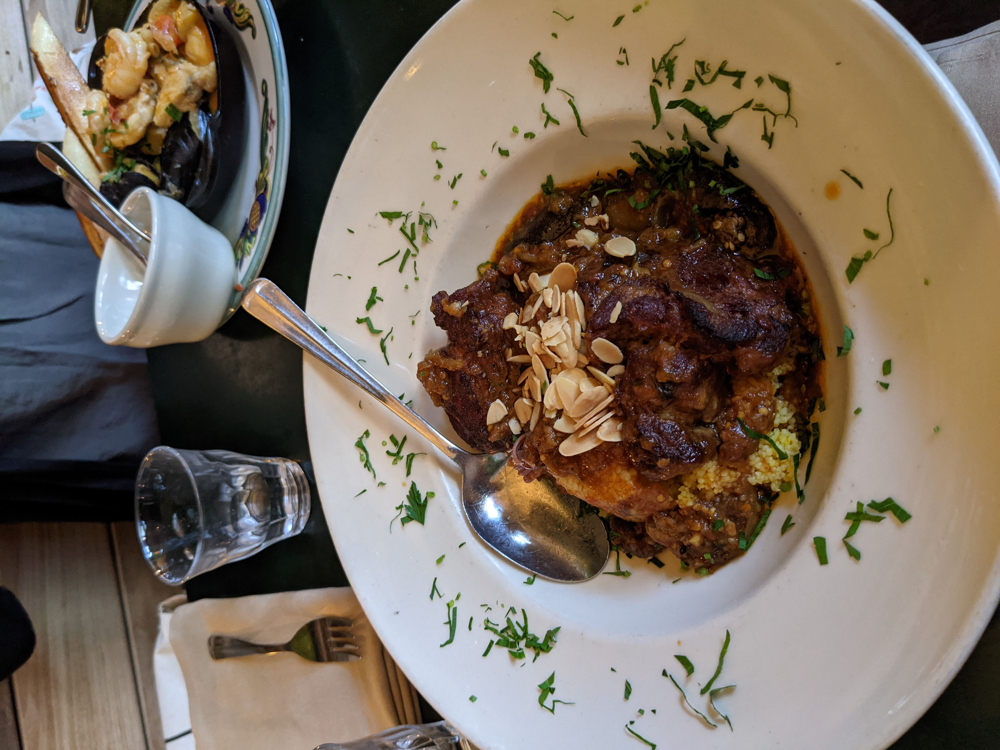

Some of my favorite things from 2021
It's been a long year filled with too many Greek letters, but in spite of the ongoing pandemic, this year brought many exciting new experiences.
I've never done anything like this before, but one of my friends recently asked me what my favorite movies, books, songs, etc. were this year, so I was inspired to reflect back and compile a list of my favorite things.
I know there's probably already thousands of these articles out there by now—it seems to be an entire genre at this point.
But somehow I always thought it strange that people posted their year-end lists before the actual end of the year.
I mean, it's entirely possible you eat the best thing of that year on New Year's Eve?
I do realize that this post is coming out on the 30th of December rather than the 31st, but I feel sufficient confidence that there won't be anything exciting while I'm waiting at home for 2022's arrival.
These lists also always feel rather self-indulugent, a vehicle to show off one's erudition in books read and cultural sophistication in movies watched.
But regardless, this post is out in the wild for the world to see, so I hope you enjoy and I'll see you again in the new year.
Music
-
Album, 2021: An Evening with Silk Sonic (Silk Sonic), El Madrileño (C. Tangana)
-
Album, pre-2021: thank u, next (Ariana Grande), 4 (Beyoncé)
-
Song, 2021:
Leave the Door Open (Silk Sonic),
Comerte Entera (C. Tangana)
-
Song, pre-2021: The Story of O.J. (Jay-Z), Forgive Me (Chloe x Halle), La Noche de Anoche (Bad Bunny and Rosalía)
-
Classical: Bach: Sonatas and Partitas for solo violin (Isabelle Faust), Liszt: Harmonies Poétiques et Religieuses (Brigitte Engerer)
Book
-
Fiction: Homeland Elegies (Ayad Akhtar)
-
Nonfiction: The Right to Sex (Amia Srinivasan)
Movie
-
New, 2021: Minari
-
New, honorable mentions: No Time to Die and Judas and the Black Messiah
-
Old, pre-2021: Lust, Caution and In the Mood for Love
Papers
-
Markus Meister. On the dimensionality of odor space. eLife 2015.
-
John Jumper, et al. High accurate protein structure prediction with AlphaFold. Nature 2021.
-
Jingjing Xu, et al. Magnetic sensitivity of cryptochrome 4 from a migratory songbird. Nature 2021.
-
Fei Chen, Paul Tillberg, Edward Boyden. Expansion microscopy. Science 2015.
Food
-
Chocolate croissant at Kusama (Chicago, IL)

-
Barbeque short rib and hush puppies at Toutant (Buffalo, NY)

-
Lox bagel at Bagelsaurus (Boston, MA)

-
Duck with mole at Little Donkey (Boston, MA)

-
Everything at Rose Ave Bakery (Washington, D.C.)
-
Tagine at Zazie (San Francisco, CA)

-
Carnitas tacos at Carnitas Michoacan (Chicago, IL)
-
Croissant at Scenic Route Bakery (Des Moines, IA)
Home | Research | Blog
Last updated December 30, 2021.